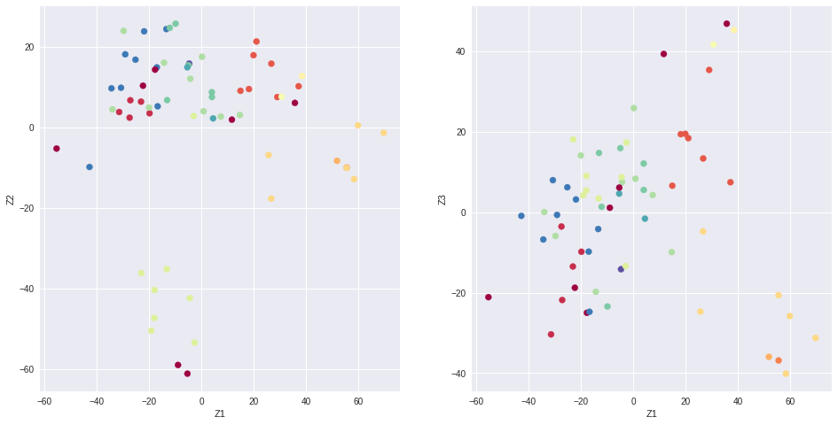
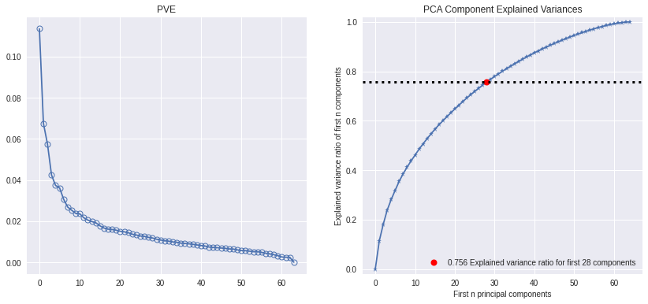
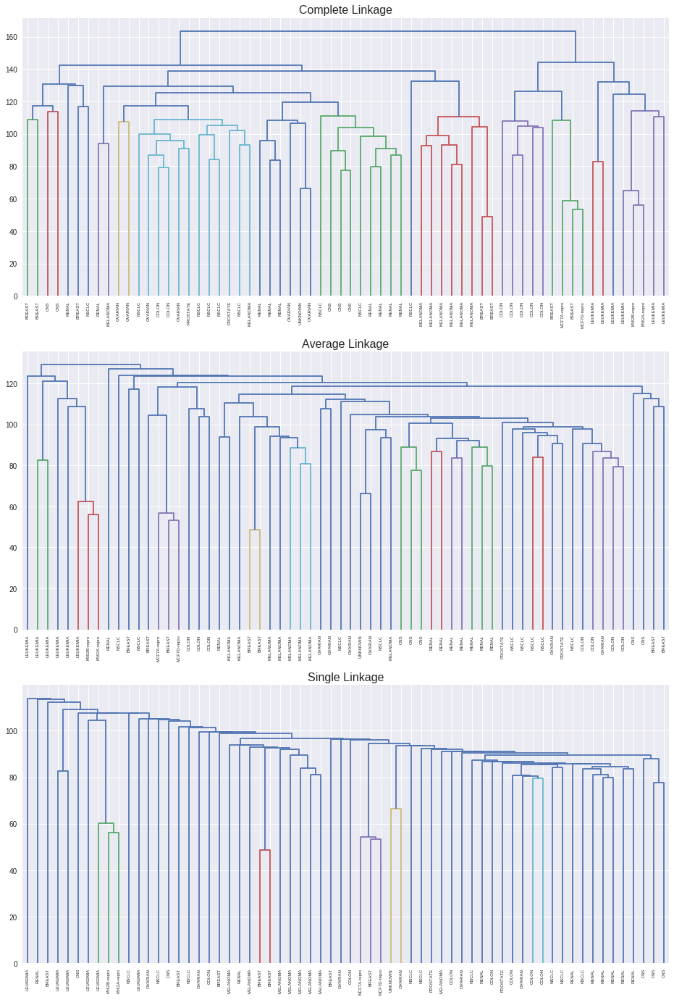
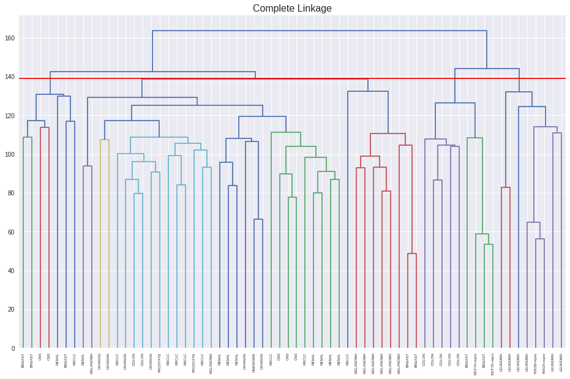
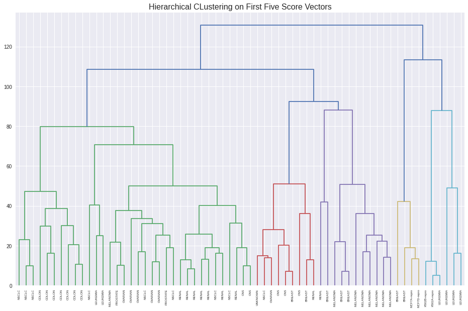

Chapter 10 - Lab 3: NCI60 Data Example¶
# imports and setup
%matplotlib inline
import numpy as np
import pandas as pd
import seaborn as sns
import matplotlib.pyplot as plt
pd.set_option('precision', 4) # number precision for pandas
pd.set_option('display.max_rows', 50)
pd.set_option('display.max_columns', 20)
pd.set_option('display.float_format', '{:20,.4f}'.format) # get rid of scientific notation
plt.style.use('seaborn') # pretty matplotlib plots
nci60 = pd.read_csv('../datasets/NCI60.csv', index_col=0)
nci_labs = nci60.labs
nci_data = nci60.drop('labs', axis=1)
nci_data.head()
| data.1 | data.2 | data.3 | data.4 | data.5 | data.6 | data.7 | data.8 | data.9 | data.10 | ... | data.6821 | data.6822 | data.6823 | data.6824 | data.6825 | data.6826 | data.6827 | data.6828 | data.6829 | data.6830 | |
|---|---|---|---|---|---|---|---|---|---|---|---|---|---|---|---|---|---|---|---|---|---|
| V1 | 0.3000 | 1.1800 | 0.5500 | 1.1400 | -0.2650 | -0.0700 | 0.3500 | -0.3150 | -0.4500 | -0.6550 | ... | -0.9900 | 0.0000 | 0.0300 | -0.1750 | 0.6300 | -0.0300 | 0.0000 | 0.2800 | -0.3400 | -1.9300 |
| V2 | 0.6800 | 1.2900 | 0.1700 | 0.3800 | 0.4650 | 0.5800 | 0.7000 | 0.7250 | -0.0400 | -0.2850 | ... | -0.2701 | -0.3000 | -0.2500 | -0.5350 | 0.1099 | -0.8600 | -1.2500 | -0.7700 | -0.3900 | -2.0000 |
| V3 | 0.9400 | -0.0400 | -0.1700 | -0.0400 | -0.6050 | 0.0000 | 0.0900 | 0.6450 | 0.4300 | 0.4750 | ... | 0.3200 | 0.1200 | -0.7400 | -0.5950 | -0.2700 | -0.1500 | 0.0000 | -0.1200 | -0.4100 | 0.0000 |
| V4 | 0.2800 | -0.3100 | 0.6800 | -0.8100 | 0.6250 | -0.0000 | 0.1700 | 0.2450 | 0.0200 | 0.0950 | ... | -1.2400 | -0.1100 | -0.1600 | 0.0950 | -0.3500 | -0.3000 | -1.1500 | 1.0900 | -0.2600 | -1.1000 |
| V5 | 0.4850 | -0.4650 | 0.3950 | 0.9050 | 0.2000 | -0.0050 | 0.0850 | 0.1100 | 0.2350 | 1.4900 | ... | 0.5550 | -0.7750 | -0.5150 | -0.3200 | 0.6350 | 0.6050 | 0.0000 | 0.7450 | 0.4250 | 0.1450 |
5 rows × 6830 columns
nci_labs.head()
V1 CNS
V2 CNS
V3 CNS
V4 RENAL
V5 BREAST
Name: labs, dtype: object
nci_labs.value_counts()
RENAL 9
NSCLC 9
MELANOMA 8
BREAST 7
COLON 7
OVARIAN 6
LEUKEMIA 6
CNS 5
PROSTATE 2
UNKNOWN 1
K562B-repro 1
K562A-repro 1
MCF7A-repro 1
MCF7D-repro 1
Name: labs, dtype: int64
10.6.1 PCA on the NCI60 Data¶
from sklearn.decomposition import PCA
from sklearn.preprocessing import StandardScaler
scaler = StandardScaler()
nci_scaled = scaler.fit_transform(nci_data)
pca = PCA()
pca.fit(nci_scaled)
PCA()
x = pca.transform(nci_scaled)
from sklearn.preprocessing import LabelEncoder
le = LabelEncoder()
color_index = le.fit_transform(nci_labs)
f, axes = plt.subplots(1, 2, sharex=False, sharey=False)
f.set_figheight(8)
f.set_figwidth(16)
axes[0].scatter(x[:, 0], -x[:, 1], c=color_index, cmap='Spectral')
axes[0].set_xlabel('Z1')
axes[0].set_ylabel('Z2')
axes[1].scatter(x[:, 0], x[:, 2], c=color_index, cmap='Spectral')
axes[1].set_xlabel('Z1')
axes[1].set_ylabel('Z3');

pca.explained_variance_ratio_[:5]
array([0.11358942, 0.06756203, 0.05751842, 0.04247554, 0.03734972])
pca.explained_variance_ratio_.cumsum()[:5]
array([0.11358942, 0.18115144, 0.23866987, 0.28114541, 0.31849513])
from scikitplot.decomposition import plot_pca_component_variance
f, axes = plt.subplots(1, 2, sharex=False, sharey=False)
f.set_figheight(6)
f.set_figwidth(14)
axes[0].plot(pca.explained_variance_ratio_, marker='o', markeredgewidth=1, markerfacecolor='None')
axes[0].set_title('PVE')
plot_pca_component_variance(pca, ax=axes[1]);

10.6.2 Clustering the Observations of the NCI60 Data¶
from scipy.cluster.hierarchy import dendrogram, linkage, cut_tree
f, axes = plt.subplots(3, 1, sharex=False, sharey=False)
f.set_figheight(24)
f.set_figwidth(16)
dendrogram(linkage(nci_scaled, method='complete'),
labels=nci_labs,
leaf_rotation=90,
leaf_font_size=6,
ax=axes[0])
dendrogram(linkage(nci_scaled, method='average'),
labels=nci_labs,
leaf_rotation=90,
leaf_font_size=6,
ax=axes[1])
dendrogram(linkage(nci_scaled, method='single'),
labels=nci_labs,
leaf_rotation=90,
leaf_font_size=6,
ax=axes[2])
axes[0].set_title('Complete Linkage', size=16)
axes[1].set_title('Average Linkage', size=16)
axes[2].set_title('Single Linkage', size=16);

hc_clusters = cut_tree(linkage(nci_scaled, method='complete'), 4).ravel()
pd.crosstab(hc_clusters, nci_labs)
| labs | BREAST | CNS | COLON | K562A-repro | K562B-repro | LEUKEMIA | MCF7A-repro | MCF7D-repro | MELANOMA | NSCLC | OVARIAN | PROSTATE | RENAL | UNKNOWN |
|---|---|---|---|---|---|---|---|---|---|---|---|---|---|---|
| row_0 | ||||||||||||||
| 0 | 2 | 3 | 2 | 0 | 0 | 0 | 0 | 0 | 8 | 8 | 6 | 2 | 8 | 1 |
| 1 | 3 | 2 | 0 | 0 | 0 | 0 | 0 | 0 | 0 | 1 | 0 | 0 | 1 | 0 |
| 2 | 0 | 0 | 0 | 1 | 1 | 6 | 0 | 0 | 0 | 0 | 0 | 0 | 0 | 0 |
| 3 | 2 | 0 | 5 | 0 | 0 | 0 | 1 | 1 | 0 | 0 | 0 | 0 | 0 | 0 |
plt.figure(figsize=(16, 10))
dendrogram(linkage(nci_scaled, method='complete'),
labels=nci_labs,
leaf_rotation=90,
leaf_font_size=6)
plt.axhline(y=139, c='r')
plt.title('Complete Linkage', size=16);

from sklearn.cluster import KMeans
km = KMeans(n_clusters=4, n_init=20, random_state=42)
km.fit(nci_scaled)
pd.crosstab(km.labels_, hc_clusters)
| col_0 | 0 | 1 | 2 | 3 |
|---|---|---|---|---|
| row_0 | ||||
| 0 | 9 | 0 | 0 | 0 |
| 1 | 9 | 0 | 0 | 8 |
| 2 | 22 | 7 | 0 | 0 |
| 3 | 0 | 0 | 8 | 1 |
hc2 = linkage(x[:, 0:5], method='complete')
plt.figure(figsize=(16, 10))
dendrogram(hc2,
labels=nci_labs,
leaf_rotation=90,
leaf_font_size=6)
plt.title('Hierarchical CLustering on First Five Score Vectors', size=16);

pd.crosstab(cut_tree(hc2, 4).ravel(), nci_labs)
| labs | BREAST | CNS | COLON | K562A-repro | K562B-repro | LEUKEMIA | MCF7A-repro | MCF7D-repro | MELANOMA | NSCLC | OVARIAN | PROSTATE | RENAL | UNKNOWN |
|---|---|---|---|---|---|---|---|---|---|---|---|---|---|---|
| row_0 | ||||||||||||||
| 0 | 0 | 2 | 7 | 0 | 0 | 2 | 0 | 0 | 1 | 8 | 5 | 2 | 7 | 0 |
| 1 | 5 | 3 | 0 | 0 | 0 | 0 | 0 | 0 | 7 | 1 | 1 | 0 | 2 | 1 |
| 2 | 0 | 0 | 0 | 1 | 1 | 4 | 0 | 0 | 0 | 0 | 0 | 0 | 0 | 0 |
| 3 | 2 | 0 | 0 | 0 | 0 | 0 | 1 | 1 | 0 | 0 | 0 | 0 | 0 | 0 |